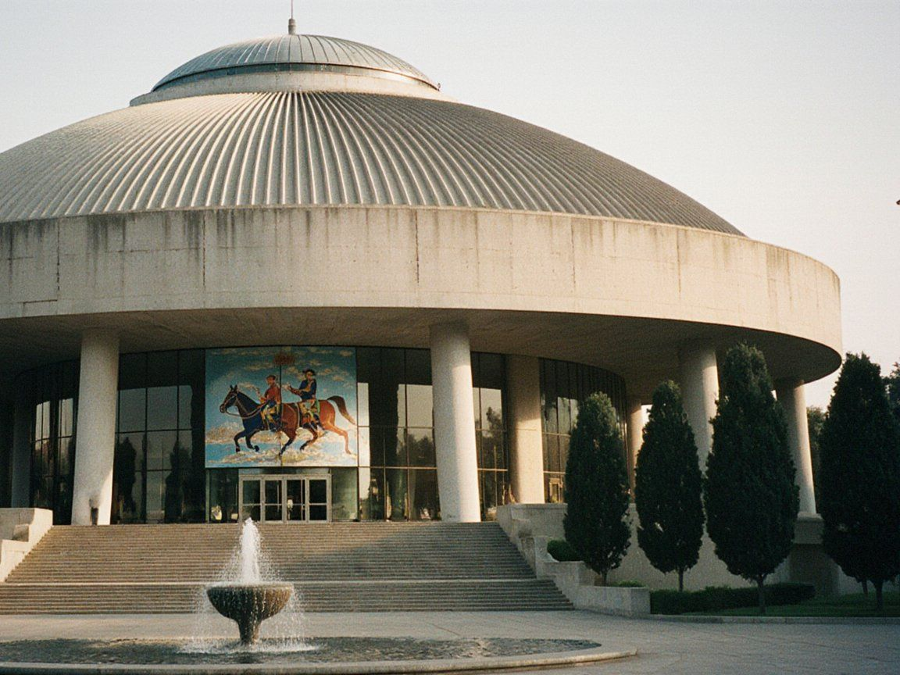

The Hall

Tündük
The hall was designed by Erkin Sydykbekov and built in 1971–74: a round auditorium of 1,150 seats under a ribbed concrete shell that gathers into a skylight, like the smoke-ring of a yurt. Talas has called it Tündük since the first week.
In 2021, after a campaign by the city's architects, led by Taiyr Bektenov, and by the Talas Herald, the hall was listed as a monument of architecture. The plan to put up a glass shopping arcade in front of it was dropped.
The Mosaic
The foyer mosaic shows the epic riders of Janyl Baatyr crossing the passes, in smalt and Talas river stone, 38 metres long. Since 2022 a team from the Palace of Art workshop has been resetting the loose stones, one bay at a time, with half the cost paid by the Körköm Foundation. Bays 1 to 5 are done; bays 6 to 9 follow in 2027.
Guided tours of the hall and the mosaic: Saturdays at 13:00, 150 som, from the box office.